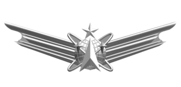
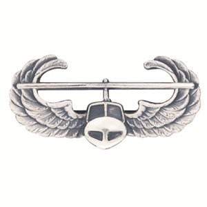
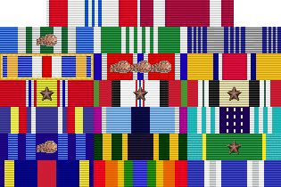

Major Kevin Walchko



Academics
- 2003 DOCTOR OF PHILOSOPHY, Mechanical Engineering, University of Florida [Funded through Fellowship from NASA Goddard Space Flight Center]
- 2002 MASTERS IN SCIENCE, Electrical Engineering, University of Florida
- 1999 MASTERS IN SCIENCE, Mechanical Engineering, University of Florida [Funded through Fellowship from NASA Goddard Space Flight Center]
- 1997 BACHELOR OF SCIENCE, Mechanical Engineering, University of Florida
Deployments
- 2013 ISAF Joint Command, CJ2, Kabul, Afghanistan
- 2009 Defense Contract Management Agency-Southern Iraq, BIAP, Iraq
Career
- 2016 Dean of Faculty, US Air Force Academy, Co Sprints, CO
- 2014 Commandant of Cadets, US Air Force Academy, Co Springs, CO
- 2010 National Reconnaissance Office, Chantilly, VA
- 2006 Space Superiority Systems Wing, Los Angeles AFB
- 2003 AFRL Space Vehicles Directorate, Kirtland AFB
Professional Schools
- 2014 Air Command and Staff College, correspondence
- 2010 Squadron Officer School, residence & correspondence
- 2004 Air and Space Basic Course, residence
Publications
- Hindman, C., Engberg, B., Hunt, J., and Walchko, K., "Optimal GEO Lasercomm Terminal Field of View for LEO Link Support";, SPIE Free-space Laser Communications Technologies XVIII, 2006.
- Hindman, C., Walchko, K., and Spratley, C., "Point-ahead Tracking for Space to Air Laser Pointing", MSS Active Electro-Optic Sensor Systems Conference, Columbia, MD, 2005.
- Grzywna, J., Walchko, K., and Nechyba, M., Subjugator: A Reconfigurable AUV, 2nd AIAA Systems, Technologies, and Operations Aerospace, Land, and Sea Conference and Workshop & Exhibit, San Diego, CA, Sept 15-18, 2003.
- Walchko, K., "Robust Attitude Control with Disturbance Compensation," Ph.D. Dissertation, University of Florida, Gainesville, FL, 2003.
- Walchko, K., Nechyba, M., Schwartz, E., and Arroyo, A., "Embedded Low Cost Inertial Navigation System," Florida Conference on Recent Advances in Robotics, FAU, Dania Beach, FL, May 8-9, 2003.
- Walchko, K., Novick, D., and Nechyba, M., "Development of a Sliding Mode Control System with Extended Kalman Filter Estimation for Subjugator," Florida Conference on Recent Advances in Robotics, FAU, Dania Beach, FL, May 8-9, 2003.
- Walchko, K., "Low Cost Inertial Navigation,", Masters Thesis, University of Florida, Gainesville, FL, August, 2002.
- Grzywna, J., Laine, J., Walchko, K., Dye, R., Jain, A., Ivano, N., Nechyba, M., Eric M. Schwartz, Arroyo, A., Subjugator 2002, 5th International Autonomous Underwater Vehicle Competition, San Diego, CA, July 31 Aug. 4, 2002.
- Walchko, K. and Mason, P., Inertial Navigation, Florida Conference on the Recent Advances in Robotics, Miami, FL, 23-24 May 2002.
- Grzywna, J., Laine, J., Walchko, K., Dye, R., Jain, A., Ivano, N., Nechyba, M., Eric M. Schwartz, Arroyo, A., Subjugator: The Development of an Autonomous Underwater Vehicle, Florida Conference on the Recent Advances in Robotics, Tallahassee, FL, 10-11 June 2001.
- Grzywna, J., Kanowitz, S., Laine, J., Nortman, S., Novick, D., Walchko, K.,Nechyba, M., Eric M. Schwartz, Arroyo, A., SubjuGator: Sinkin' is Easy, AIAA Conference, Sep 2003.
- Walchko, K. and Mason, P., Development of a Fuzzy Sliding Mode Controller for Satellite Attitude Control, Graduate Student Research Project Report, Fall 2000.
- Walchko, K., Mason, P., and Crane, C., A MIMO fuzzy Controller for Tracking: Robot Control, Florida Conference on the Recent Advances in Robotics, Gainesville, May 1999.
- Walchko, K. and Mason, P., Intelligent Attitude Control with Uncertainty and Disturbance Compensation, Flight Mechanics and Estimation Technology Symposium, NASA Goddard, May 1999.
- Walchko, K., "Development of a Generic Fuzzy Logic MIMO Controller for Attitude Control,", Masters Thesis, University of Florida, Gainesville, FL, April, 1999.
- Petroff, N., Mason, P., and Walchko, K., "Numerical Stability Analysis of a Fuzzy Controller," Artificial Neural Networks in Engineering, St. Louis, Ms, 1-4 Nov. 1998. (First Runner-Up for best paper).
- Walchko, K. and Mason, P., "Development of a Generic Hybrid Fuzzy Controller, Artificial Neural Networks in Engineering, St. Louis, Ms, 1-4 Nov. 1998.